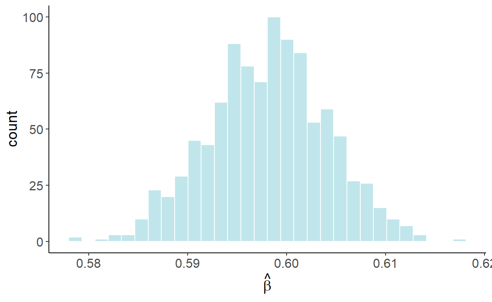

Chapter 4 Trends and Seasonality
Economic time series usually are characterized by trending behavior, and often present a seasonal pattern as well. Trend is a unidirectional change of time series over an extended period of time that arises from the accumulation of information over time. Seasonality is a repeating pattern within a calendar year that arises from the links of technologies, preferences, and institutions to the calendar. Modeling and forecasting these time series features is a fairly straightforward task. But before we get to it, let’s discuss what may happen if we were to ignore the presence of trends and/or seasonality when analyzing the time series data.
4.1 Spurious Relationship
Nothing about trending time series necessarily violates the classical linear regression model assumptions. The issue may arise, however, if an unobserved trending variable is simultaneously correlated with the dependent variable as well as one of the independent variables in a time series regression. In such case, we may find a (statistically significant) relationship between two or more unrelated economic variables simply because they are all trending. Such relationship is referred to a spurious relationship.
To illustrate, consider two trending variables: \[y_t = \gamma t + \nu_t,\;~~\nu\sim N(0,\sigma_{\nu}^2),\] and \[x_t = \delta t + \upsilon_t,\;~~\upsilon\sim N(0,\sigma_{\upsilon}^2),\] where \(Cov(\nu_t,\upsilon_t) = 0\). For simplicity, we can assume \(\sigma_{\nu}^2=\sigma_{\upsilon}^2=1\). Suppose, \(\gamma\) and \(\delta\) are some positive scalars, say, \(0.3\) and \(0.5\), respectively. That is, \(y\) and \(x\) are trending in the same direction. Below is an example of such time series:

If we were to estimate \[y_t = \alpha+\beta x_t + \varepsilon_t,\] we are likely to find the relationship between the two – in this case \(\beta>0\) – even though, we know, the two are not related. To illustrate this, we will generate 1000 samples of size 120 for \(y\) and \(x\), and in each case we will estimate the parameter \(\beta\). The following graph illustrates the empirical distribution of these parameter estimates: 
Luckily, we can easily “fix” the issue, by incorporating a trend in the regression: \[y_t = \alpha+\beta x_t + \eta t + \varepsilon_t.\] Once the trend is accounted for, the previously illustrated “bias” disappears. Using a similar simulation exercise as before, the following graph illustrates the empirical distribution of these parameter estimates:

In fact, this “fix” is equivalent to regressing a de-trended \(y\) on a de-trended \(x\). To de-trend a variable, we first run a regression: \(y_t = \gamma_0 + \gamma_1 t + \nu_t\), and then obtain the fitted values for some fixed trend (typically zero), that is: \(\tilde{y}_t = \hat{\gamma}_0+\hat{\nu}_t\), where \(\hat{\gamma}_0\) and \(\hat{\nu}_t\) are the parameter estimate and the residuals from the foregoing regression.
4.2 Modeling
As seen, accounting for trends in a time series can help us resolve some regression issues. But a trend in and of itself can be an inherent feature of a times series. To that end, we can apply deterministic trends to forecast time series.
The simplest (and perhaps most frequently applied) model to account for the trending time series is a linear trend model: \[y_t = \alpha + \beta t\]
Other likely candidate trend specifications are polynomial (e.g. quadratic, cubic, etc.), exponential, and shifting (or switching) trend models, respectively given by: \[\begin{aligned} y_t &= \alpha + \beta_1 t + \beta_2 t^2 + \ldots + \beta_p t^p \\ y_t &= e^{\alpha + \beta t}\;~~\mbox{or}\;~~\ln{y_t} = \alpha + \beta t \\ y_t &= \alpha + \beta_1 t + \beta_2 (t-\tau)I(t>\tau),\;~~\tau\in\mathsf{T} \end{aligned}\]
Of these, here we will primarily consider linear and quadratic trends. An exponential trend, from the standpoint of modeling and forecasting, is equivalent to a linear trend fitted to natural logarithm of the series. For a time series \(\{y_t: t=1,\ldots,T\}\), the natural logarithm is: \(z_t = \ln{y_t}\). Some of the benefits of such a transformation are that:
- they are easier to interpret (relative/percentage change).
- they homogenizes the variance of the time series.
- they may result in improved forecasting accuracy.
Exponential trends are suitable when a time series is characterized by a stable relative change over time (e.g., when economic time series grow by 2% every year).
We will cover the shifting/switching trend models in another chapter.
Trends are (relatively) easy to model and forecast. Caution is needed, however, with (higher order) polynomial trends, as they may fit well in-sample, but cause major problems out-of-sample.
Consider a linear trend model with an additive error term: \[y_t = \alpha + \beta t + \varepsilon_t\] We estimate the model parameters, \(\mathbf{\theta}=\{\alpha,\beta\}\), by fitting the trend model to a time series using the least-squares regression: \[\hat{\theta} = \operatorname*{argmin}_{\mathbf{\theta}} \sum_{t=1}^{T}\big(y_t - \alpha - \beta t\big)^2.\] Fitted values are then given by: \[\hat{y}_t = \hat{\alpha} + \hat{\beta} t\]
Seasonality is typically modeled as monthly or quarterly pattern, but can also be modeled as a higher frequency pattern (e.g. weekly). Some examples of time series with apparent seasonal patterns are:
- Agricultural production.
- Sales of energy products.
- Airfare (in non-pandemic times).
One way to deal with the seasonality in data is to “remove” it prior to the use of the series (i.e., work with a seasonally adjusted time series). Indeed, some economic time series are only/also available in a seasonally-adjusted form.
Otherwise, and perhaps more interestingly, we can directly model seasonality in a regression setting by incorporating seasonal dummy variables, for example.
A seasonal model is given by: \[y_t = \sum_{i=1}^{s}\gamma_i d_{it} + \varepsilon_t,\] where \(s\) denotes the frequency of the data, and \(d_{it}\) takes the value of 1 repeatedly after every \(s\) periods, and such that \(\sum_{i} d_{it} = 1\), \(\forall t\).
Alternatively the seasonal model can be rewritten as: \[y_t = \alpha + \sum_{i=1}^{s-1}\delta_i d_{it} + \varepsilon_t,\] in which case \(\alpha\) is an intercept of an omitted season, and \(\delta_i\) represents a deviation from it during the \(i^{th}\) season. This is a more typical form of a seasonal model.
Both variants of a seasonal model result in an identical fit and forecasts.
When dealing with weekly or daily data, the dummy variable approach of modeling seasonality may not be practical, nor efficient in most instances, as that will require estimating another 51 or 364 parameters. A way to model seasonality without giving up too many degrees of freedom is by using the so-called harmonic seasonal variables, which are a set of Fourier terms.
The Fourier terms can be applied to model seasonality at any frequency, indeed. Suppose, for example, we are working with monthly time series. A model with Fourier terms will have the following form: \[y_t = \alpha+\sum_{k=1}^{K}\left[\beta_{1k}\sin\left(\frac{2\pi kt}{12}\right)+\beta_{2k}\cos\left(\frac{2\pi kt}{12}\right)\right]+\varepsilon_t,\] where the value of \(K\) can be determined using an information criterion (e.g., AIC or SIC).
4.3 Forecasting
The predictors of the deterministic trend or seasonal models are pre-determined, which means, after fitting the model, we can directly obtain the point and interval forecasts for any horizon \(h\).
If a linear trend model is fitted to the data, then any future realization of the stochastic process is assumed to follow the linear trend model: \[y_{t+h} = \alpha + \beta (t+h) + \varepsilon_{t+h}.\]
An optimal forecast of \(y_{t+h}\), therefore, is given by: \[y_{t+h|t} = E(y_{t+h}|\Omega_t) = E[\alpha + \beta (t+h) + \varepsilon_{t+h}] = \alpha + \beta (t+h).\]
The forecast error is: \[e_{t+h|t} = y_{t+h} - y_{t+h|t} = \varepsilon_{t+h}\]
The forecast variance, then, is: \[\sigma_{t+h|t}^2 = E(e_{t+h|t}^2) = E(\varepsilon_{t+h}^2) = \hat{\sigma}^2,\;~~\forall\;h\]
From this, we can obtain interval forecast at any horizon, which is: \[y_{t+h|t} \pm 1.96 \hat{\sigma}.\]
When using the dummy variable approach to model the seasonality, for example, a future realization of a random variable is: \[y_{t+h} = \alpha + \sum_{i=1}^{s-1}\delta_i d_{i,t+h} + \varepsilon_{t+h}.\]
The optimal forecast of \(y_{t+h}\) is: \[y_{t+h|t} = E(y_{t+h}|\Omega_t) = \alpha + \sum_{i=1}^{s-1}\delta_i d_{i,t+h}\]
The forecast error is: \[e_{t+h|t} = y_{t+h} - y_{t+h|t} = \varepsilon_{t+h}\]
The forecast variance is: \[\sigma_{t+h|t}^2 = E(e_{t+h|t}^2) = E(\varepsilon_{t+h}^2) = \hat{\sigma}^2,\;~~\forall\;h\]
The interval forecast is: \[y_{t+h|t} \pm 1.96 \hat{\sigma}.\]
Several characteristics of forecasts from the considered deterministic models:
- they tend to understate uncertainty (at long horizons as the forecast interval doesn not widen with the horizon);
- short-term trend forecasts can perform poorly; long-term trend forecasts typically perform poorly;
- sometimes it may be beneficial, from the standpoint of achieving better accuracy, to forecast growth rates, and then reconstruct level forecasts.
Page built: 2022-07-17 using R version 4.1.2 (2021-11-01)